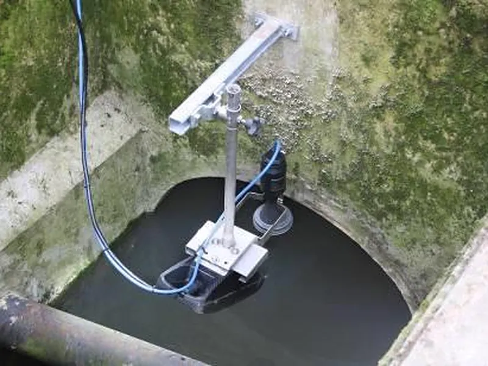
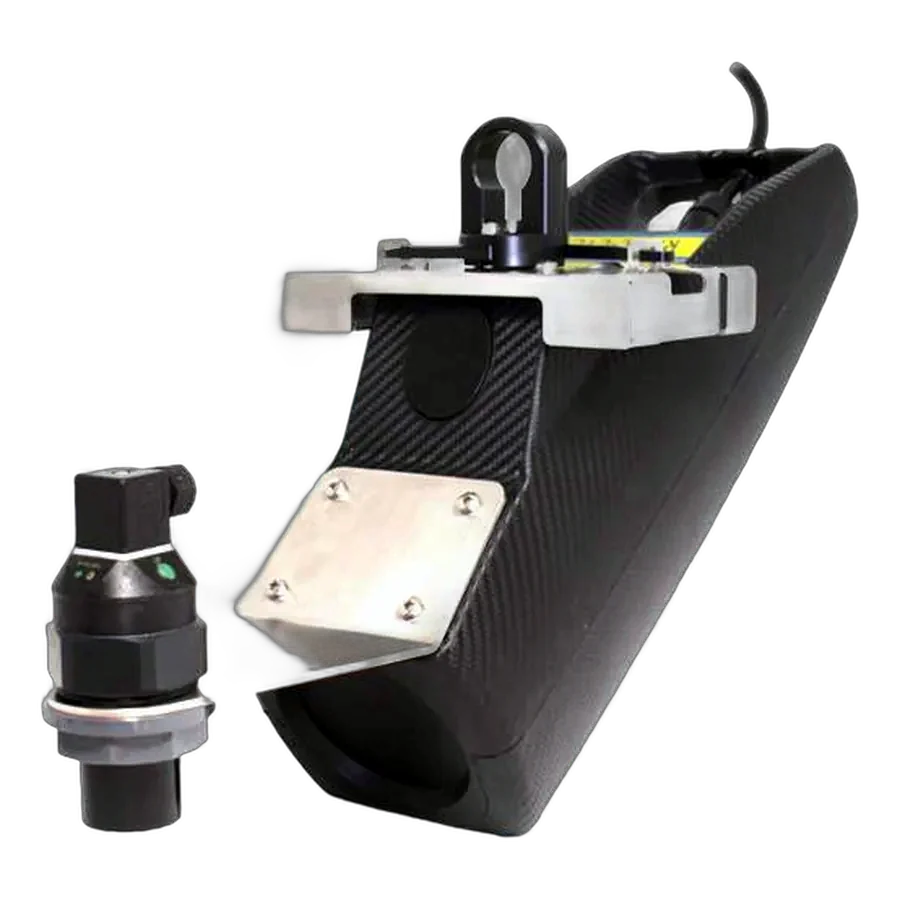
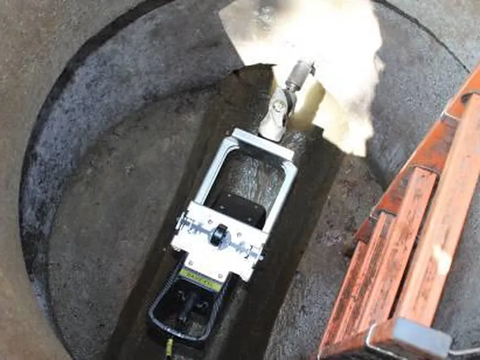
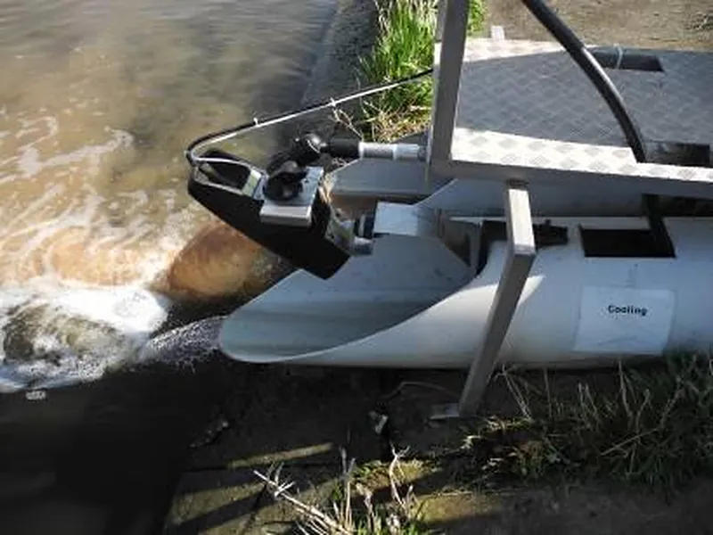
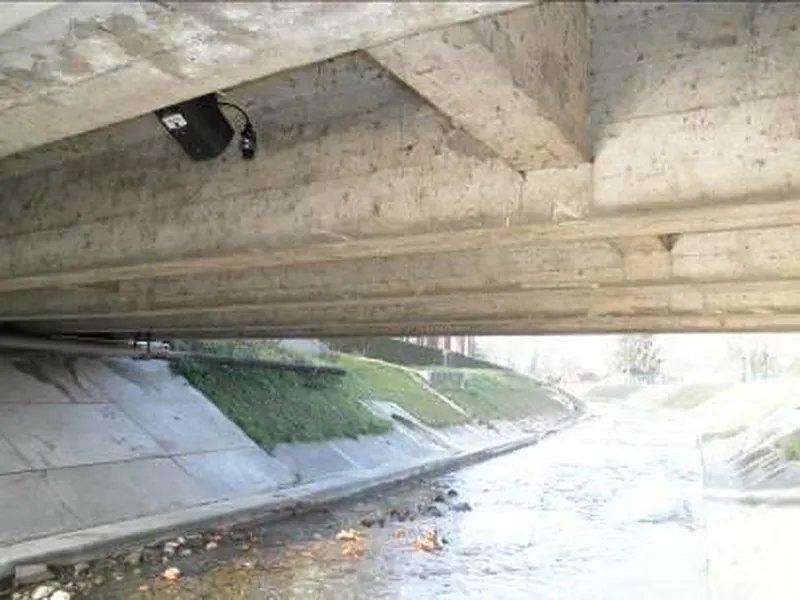
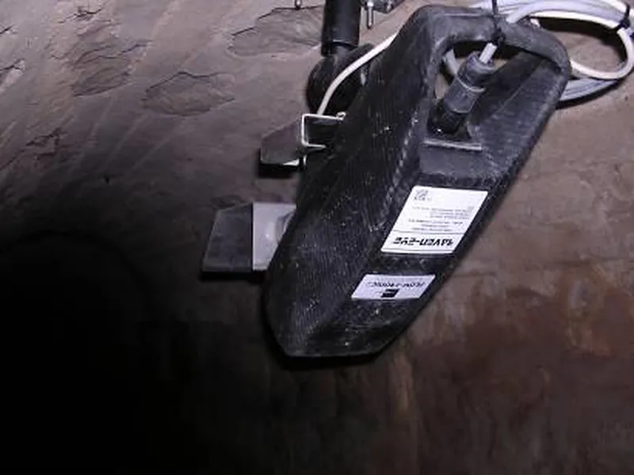
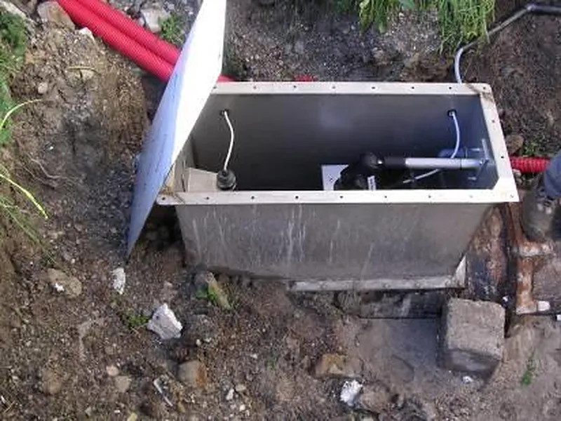
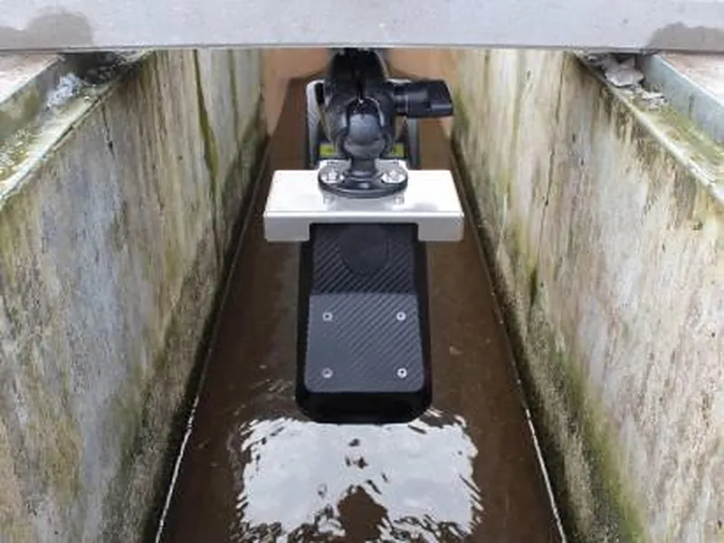
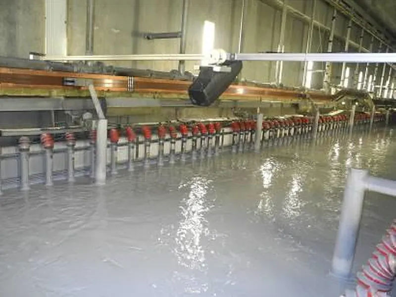

Réseaux d’assainissement
Du Ø 200 à l’ovoïde. Déversoirs d’orage, réseau pluvial. Résiste aux mises en charge.
Pour les réseaux d’assainissement, les rejets et les cours d’eau canalisés. Le radar mesure la vitesse de surface depuis le dessus de l’écoulement ; le débit est calculé avec la hauteur d’eau et la forme du conduit.
Idéal pour





Un capteur posé au-dessus de l’eau : rien dans l’effluent, rien à nettoyer, et un débit calculé par l’appareil lui-même.
Le radar émet une onde vers la surface de l’eau. L’onde réfléchie revient avec une fréquence différente, qui donne la vitesse de surface.
Des algorithmes convertissent cette vitesse de surface en vitesse moyenne, selon le niveau et la forme du conduit. Ils font l’objet d’un brevet (WO 2014/202709).
La hauteur d’eau, mesurée par un capteur séparé, donne la section mouillée. Le débit est le produit de la vitesse moyenne par la section mouillée.
Faites varier la hauteur d’eau dans un collecteur circulaire : la section mouillée et le débit suivent.
Collecteur en charge : le radar est immergé et ne mesure plus la vitesse, seule la hauteur reste disponible. En option, un capteur de vitesse électromagnétique ou Doppler prend le relais, la commutation étant assurée par le transmetteur.
Calcul géométrique pour une conduite circulaire, à titre d’illustration.
Le montage dépend de l’accès à l’écoulement. Votre interlocuteur le choisit avec vous lors de la visite du site.
Installation à partir du regard, au-dessus de la cunette.

Installation sur les gros collecteurs, au plus près de la voûte.

Installation sur un conduit existant qui n’a pas de regard de visite.

Installation au-dessus des grands canaux, depuis une passerelle ou une traverse.
Des petits collecteurs aux canaux à ciel ouvert, dès quelques millimètres d’écoulement.

Du Ø 200 à l’ovoïde. Déversoirs d’orage, réseau pluvial. Résiste aux mises en charge.
Eaux de rejet, de refroidissement, eaux de pluie. Faibles débits, dès quelques millimètres d’écoulement, comme débits élevés.
Capteurs de hauteur et de vitesse posés sous un pont. Surveillance de crue.

Eaux de process, convoyage par eau, bains. Utilisable en simple mesure de vitesse.
Sur l’automate du poste, sur un enregistreur autonome ou sur un transmetteur dédié.
RAVEN-EYERS485 ModbusAutomate
Sur automateL’automate transmet le niveau au RAVEN-EYE, qui mesure la vitesse, calcule le débit et le renvoie par RS485. Transmission numérique, sur longue distance.
RAVEN-EYE4-20 mA ou ModbusEnregistreur
Sur enregistreur autonomeLe capteur de niveau est relié au RAVEN-EYE. Enregistrement de la hauteur et du débit en 4-20 mA, ou de la hauteur, de la vitesse et du débit en Modbus.
RAVEN-EYERS485IFQ Monitor
Avec un transmetteurEn poste fixe, le transmetteur IFQ Monitor affiche et enregistre niveau, vitesse et débit, et les retransmet en 4-20 mA. En mesure ponctuelle, l’enregistreur portable IFQ-Logger.
Capteur RAVEN-EYE 2, puis le transmetteur et l’enregistreur associés.
| Vitesse | |
|---|---|
| Méthode | Radar, avec inclinomètre intégré |
| Gamme | ± 0,08 à ± 9 m/s, bidirectionnelle |
| Précision | ± 0,5 % + stabilité du zéro |
| Stabilité du zéro | ± 0,02 m/s |
| Résolution | 0,001 m/s |
| Niveau et débit | |
| Niveau | Capteur séparé, au choix : en Modbus, ou capteur 2 fils 4-20 mA sur l’entrée analogique |
| Résolution du niveau | 1 mm |
| Calcul du débit | Vitesse moyenne calculée × section mouillée, selon la forme du conduit |
| Entrées, sorties, alimentation | |
| Communication | RS485 Modbus ASCII |
| Entrée analogique | 4-20 mA pour capteur de niveau 2 fils (24 V) |
| Sortie analogique | 4-20 mA passive, vitesse ou débit |
| Alimentation | 4 à 26 Vdc, 40 mA à 12 V |
| Mesures internes | Température −40 à 80 °C, humidité 0 à 100 %, pression 0 à 1 500 hPa |
| Construction | |
| Boîtier | Polyuréthane moulé monobloc, ni joint ni vis |
| Dimensions | 422 × 140 × 183 mm (L × l × H) |
| Poids | 3,65 kg, capteur seul |
| Protection | IP68 |
| Température | −30 à 70 °C en fonctionnement, −30 à 80 °C en stockage |
| Câble | Gaine polyuréthane, 10 m en standard, 20 ou 30 m en option, jusqu’à 300 m sur demande |
| Option | ATEX zone 2 avec barrière : RAVEN-EYE AZ1 |
| Caractéristique | IFQ Monitor | IFQ-Logger |
|---|---|---|
| Usage | Transmetteur de débit, poste fixe | Enregistreur portable |
| Fonctions | Affichage, enregistrement de niveau, vitesse et débit, retransmission 4-20 mA | Affichage, enregistrement de niveau, vitesse et débit |
| Écran | Clavier et écran graphique 144 × 32 pixels : niveau, vitesse, débit, totalisation | |
| Enregistrement | Carte SD 2 Go, 18 voies, fichier .tsv ; 13 ans de mémoire au pas d’une minute | |
| Sorties analogiques | 2 sorties 4-20 mA (H et Q), 250 Ω au maximum | — |
| Sorties tout ou rien | Relais de totalisation et relais d’alarme défaut, 6 A | Relais de totalisation, 6 A |
| Options | Sortie RS485 Modbus RTU, modem GPRS/3G | Sortie RS485 Modbus RTU, modem GPRS/3G |
| Alimentation | 9 à 36 Vdc ou 85 à 265 Vac | Batterie externe, 9 à 18 Vdc |
| Coffret | ABS, 257 × 217 × 124 mm, 2,25 kg | PPC, 235 × 192 × 112 mm, 1,5 kg sans batterie |
| Protection | IP65 | IP67 |
| Température | −25 à 55 °C en fonctionnement, −30 à 65 °C en stockage | |
Sur les points réglementaires (A2, déversoirs d’orage…), COMETEC contrôle les RAVEN-EYE en place avec le banc RAV-TRACK, qu’elle a développé. La vitesse lue par le radar est comparée à celle du banc sur trois réglages, selon la démarche du fascicule FD X 07-011.
Fiche technique en téléchargement libre. Les notes de terrain arrivent au fil des installations.
Les questions que nous posent le plus souvent les exploitants et les bureaux d’études.
Non. Il est posé au-dessus de l’écoulement et vise la surface. Il n’est donc exposé ni aux dépôts de sédiments ni aux graisses, contrairement aux capteurs immergés.
Quand l’eau atteint le capteur, le radar est immergé et ne mesure plus la vitesse : seule la hauteur reste disponible. En option, un capteur de vitesse électromagnétique ou Doppler, fixé sous le RAVEN-EYE ou en voûte, prend le relais ; la commutation est assurée par le transmetteur.
Le choix est libre : capteur à ultrasons (ULS02, ULS06), radar, piézorésistif, bulle à bulle ou tout capteur 2 fils 4-20 mA. Raccordé à un automate, le RAVEN-EYE peut aussi recevoir le niveau en Modbus.
Oui, en RS485 Modbus ASCII. L’automate lui transmet le niveau, le RAVEN-EYE calcule le débit et l’automate lit ce débit.
Sa gamme commence à ± 0,08 m/s. Sur le terrain, ce qui compte surtout est une surface en mouvement, avec des vaguelettes : une surface très lisse, par exemple sous influence aval, se mesure moins bien. Votre interlocuteur valide le point de mesure avant la pose.
COMETEC le contrôle sur site avec le banc RAV-TRACK : trois réglages de vitesse, trois lectures chacun, tolérance de ± 10 % par réglage. Un constat de vérification vous est remis.
Oui, en option : le RAVEN-EYE AZ1, pour la zone 2, avec barrière.
Quand une mesure immergée convient mieux, ou pour une campagne de mesure ponctuelle.
Le technico-commercial de votre secteur visite le point de mesure, choisit le montage avec vous et met l’appareil en service.
RAVEN-EYE. La demande est transmise au technico-commercial de votre secteur.